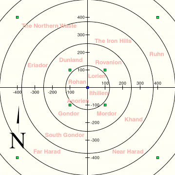

The Realm
The realm is a massive cartesian system and all objects reside at some point on this plane. Certain regions of the playing grid have different names. In general, this is only to give the player some idea of his/her present location. Some special places do exist.

Circles
- The realm is broken up in circles, each one with an increasing radius of 125
from the origin. For example, if you're standing on (0, 200), you are said to be
in circle 2. This distinction is made because a monster's size is equal to the
circle it was encountered in.
Trading Posts
- Trading posts stand along the eight roads that run out from the throne at 0,0: the four
diagonals and the four main roads (north, south, east and west), so every region has them.
Take any whole number, multiply it by itself and then by 100: a post stands that far out along
every road. For example 3*3*100 = 900, so there are posts at (900, 900), (-900, 900),
(900, -900) and (-900, -900) on the diagonals, and at (900, 0), (-900, 0), (0, 900) and
(0, -900) on the main roads. When you enter a region the game tells you where its nearest post
is, and /realm in chat tells you again.
| Rank | Along the road | On a main road (distance, circle) | On a diagonal (distance, circle) |
|---|---|---|---|
| 1 | 100 | 100, circle 1 | 141, circle 2 |
| 2 | 400 | 400, circle 4 | 566, circle 5 |
| 3 | 900 | 900, circle 8 | 1,273, circle 11 |
| 4 | 1,600 | 1,600, circle 13 | 2,263, circle 19 |
| 5 | 2,500 | 2,500, circle 21 | 3,536, circle 29 |
| 6 | 3,600 | 3,600, circle 29 | 5,091, circle 41 |
| 7 | 4,900 | 4,900, circle 40 | 6,930, circle 56 |
| 8+ | 6,400, 8,100, 10,000 … | and so on, farther apart the farther out you go | |
Trading posts sell equipment for large quantities of gems and gold. Farther out posts have more things for sale. Be careful about cheating the merchants, as they have short tempers. Merchants are dishonest about 2% of the time.
Lord's Chamber
- This is located at the origin (0,0). Players with staves and crowns may enter, possibly after a bloody coup.
Point of No Return
- This is a large square around the origin. Any time one of your coordinates is equal or greater than 1,000,000, you are beyond this point of no return. The only way to return is via Gwaihir.
Dead Marshes
- This is a band located fairly distant from the origin. The first sixteen monsters (water monsters) can normally only be found here and movement slows to a crawl. Teleportation spells do not work for locations inside the Marshes.
Plateau of Gorgoroth
- This is surrounded by the Dead Marshes and cannot be reached by teleport. The monsters here are extremely tough and improve as the player improves. Players are warned not to spend too much time in here unless they enjoy a significant risk of death! However, the diagonal posts in the Plateau (rank 5) are the only posts in the game that sell blessings....
Cracks of Doom
- This is surrounded by the Plateau of Gorgoroth and cannot be reached by teleport. The monsters here are even tougher than on the Plateau and improve as the player improves. Players are warned not to spend too much time in here unless they enjoy a significant risk of death! However, the Cracks are the only place in the Realm where Rings of Power can be destroyed, a feat necessary to receive a crown.